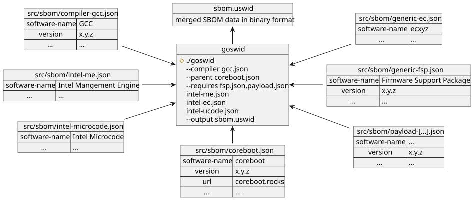

Software Bill of Materials (SBOM)
SBOM is a collection of information of each software component you are supplying/building. Similar to a package manager on Linux based systems, it holds information of as many software parts as possible. This information can be a version, name of the software, URL, license information and more. A SBOM can be saved in various formats. In coreboot it’s saved as “uSWID” file. uSWID is not a standard or specification but it doesn’t need to be, since it’s basically just an array/list of CoSWID (Concise Software Identification) files which in turn are specified by a RFC specification. CoSWID files are saved in a CBOR format. CBOR is like JSON if JSON were a binary format. Similar to a package manager the CoSWID format can link multiple softwares together. For example on most modern Intel systems FSP is included as a dependency of coreboot. That kind of relationship between software components (among others) can be expressed in an uSWID file. That makes firmware/software much more transparent. One could for example create a software that takes a coreboot firmware image as input and automatically creates a graph with all software components the coreboot image contains and their relationship to each other.
SWID/CoSWID
SWID is a standard hidden behind an ISO paywall. It generally identifies/describes Software components. Since SWID files are written in XML, they can get too large for devices with network and storage constraints. CoSWID is basically SWID but in CBOR binary format, which makes it far smaller compared to its big brother. Also, CoSWID is a RFC specification (so publicly accessible). Therefore CoSWID is the standard used in coreboot SBOM. But one CoSWID file/tag can only describe one single software, but since software is usually composed of multiple parts (especially in firmware with many binary blobs) uSWID was born as a container format to hold multiple CoSWID files. It also has a magic value, that makes software capable of extracting uSWID/CoSWID data without the need to understand the underlying format of the binary (in coreboot it’s the CBFS and in EDK2 it’s the COFF). To get a simple overview of how a SWID/CoSWID file looks like, just take a look at the various “templates” in src/sbom/. There are of course other SBOM specifications out there, but most of them are rather blown up and don’t support a binary format at all.
coreboot implementation
Quick overview of how things are generated:

After all SBOM data has been fetched from all the software components, the ‘goswid’ tool links them all together into one sbom.uswid file. Therefore the goswid tool is basically a linker that takes multiple CoSWID/SWID files and converts them into one uSWID file. Although the image shows only Files in JSON format it is also possible to supply them in XML or CBOR format.
The final SBOM file is located inside the CBFS.
For each software component in coreboot SBOM, there is an option in
Kconfig (usually called CONFIG_INCLUDE_[software-name]_SBOM) to either
include or not include SBOM metadata for the specified software.
Furthermore there is a CONFIG_SBOM_[software-name]_PATH option which
contains a path to a SWID/CoSWID file in a format of choice
(being either JSON, XML or CBOR). CONFIG_SBOM_[software-name]_PATH
option usually defaults to a very generic CoSWID file in JSON format
(which are stored in src/sbom/). That at least gives minimal
information like the name of the software and maybe a version.
But it is always preferred, that the CONFIG_SBOM_[software-name]_PATH
is set to a custom CoSWID/SWID file that contains much more information
(like version/commit-hash, license, URL, dependencies, …).
Therefore using the defaults is by any means to be avoided, since they
hold very little information or even worse wrong information.
Furthermore some of these Kconfig options have a suboption
(usually called CONFIG_SBOM_[software-name]_GENERATE) to generate
some basic SBOM data for the specified software component, in order to
get at least some bit of information about it by analyzing the binary
(for binary blobs) or querying information via git (for open source
projects). This is for example currently done for all payloads. For
each payload the commit hash used in the build is taken and put into
the SBOM file. For open-source projects (like all payloads) crucial
information like the current commit-hash of the payload can easily be
put into the SBOM file. Extracting information out of binary blobs is a
bit trickier for obvious reasons. For closed source binary blobs it is
therefore recommended that vendors and software-engineers create a SBOM
file as part of their build process and add a path to that SBOM file
via Kconfig options in coreboot (CONFIG_SBOM_[software-name]_PATH).
That way the final SBOM has much more useful and correct data.
Build coreboot with SBOM
Directly under the ‘General setup’ Kconfig menu is a
‘Software Bill of Materials (SBOM)’ submenu where all options are to
enable/disable SBOM integration in to the corebeoot build.
Therefore one can just enable/disable them via make menuconfig.
What to do as Developer of a binary blob (which is used in coreboot)
Generate a SWID/CoSWID/uSWID File in either JSON, XML or CBOR Format as part of your software build process
Supply that generated File along with your binary blob (preferably not inside the blob)
To build coreboot: Add
CONFIG_SBOM_[software-name]_PATHto your defconfig pointing to your [software-name] generated File.
What to do as Developer of an open source project (which is used in coreboot)
Generate a SWID/CoSWID/uSWID file in either JSON, XML or CBOR format as part of your software’s build process. For example in form of a Makefile target.
Change src/sbom/Makefile.mk (in order to know where to find the CoSWID/SWID/uSWID file) as well as the Makefile in coreboot which builds said software. For example for GRUB2 that could mean to add a Makefile target in payloads/external/GRUB2/Makefile.
Problems
What to do if the binary blob that is included in coreboot’s build
already has a SBOM file embedded in the binary? One could supply the
path of the software binary itself (e.g. me.bin) as SBOM file path for
the software in question. Which would basically mean to set
CONFIG_SBOM_[software-name]_PATH=/path/to/me.bin. This is possible
since the ‘goswid’ tooling is able to extract uSWID information out of
an unknown binary format because of uSWIDs magic value. But even if
coreboot can extract the uSWID data there is still the question of what
to do next. One can do one of the following:
Do not include the Software’s SBOM data in the final SBOM of coreboot. Data would not be duplicated, but therefore not included in coreboot SBOM file.
Extract the uSWID/CoSWID information from the binary and also include it in the coreboot SBOM. That would mean, that SBOM data is duplicated.
The first solution should in general be preferred, since its no problem if SBOM data is located at multiple locations/binaries if they don’t have a direct dependency on each other. It would be good if software that cannot run on its own only supplies the SBOM data along with it as kind of extra file instead of embedded in an unknown binary blob. coreboot can then just take it and include it in its own SBOM file. If on the other hand the binary can function on its own (e.g. EC or BMC binary), it is generally preferred that the software supplies its own SBOM data and coreboot just simply doesn’t include it in its own SBOM file. That would make a more or less clear distinction and avoids duplication in case the BMC or EC is updated (without updating coreboot). The distinction is not always easy and this problem is currently not considered in the implementation, since none of the software components currently create a SBOM file on their own.